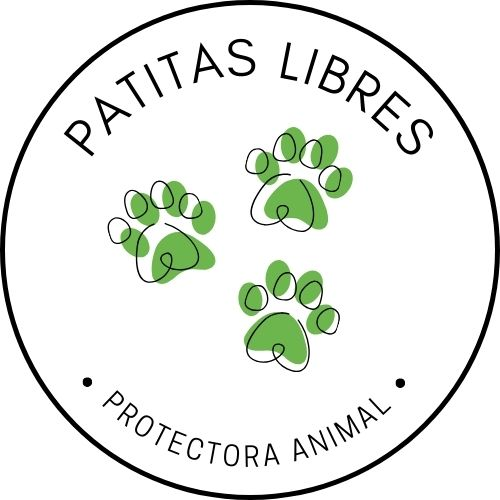
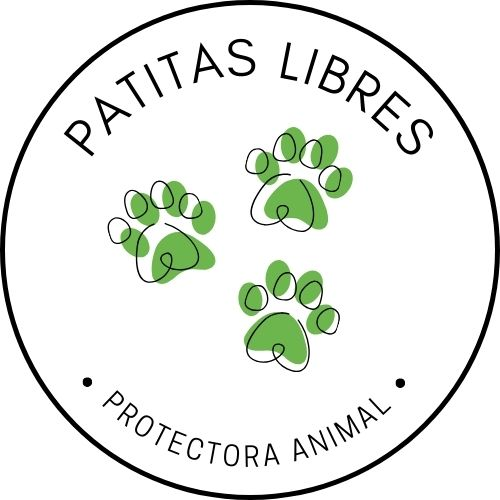

Historia de nuestro fundador
Año de nacimiento: 2012
Día: 13
Mes: Febrero
Hora: 11:11
Benjamin Clifford, aunque nacio un dia de lluvia, siempre a sido una persona llena de luz. Y es reconocido por su gran bondad y empatia por quienes no tienen la posibilidad de hablar para defenderse. Los animales, en palabras del mismo fundador, siempre han sido una parte muy importante de su vida, por esto realmente se esforzo para abrir su refugio y protectora animal "Patitas libres".